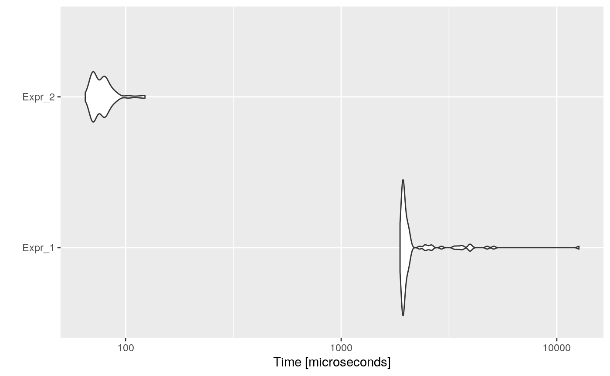

Constant folding is an optimization technique that eliminates expressions that calculate a value that can already be determined before code execution. These are typically calculations that only reference constant values or expressions that reference variables whose values are constant.
For example, consider the statement:
i <- 320 * 200 * 32
Most compilers would not actually generate two multiply instructions. Instead, they identify constructs such as these and substitute the computed values (in this case, 2048000). This way, the code will be replaced by:
i <- 2048000
A simple example would be to have to convert the unit of many temporary samples from hours to miliseconds miliseconds <- 1000 * 60 * 60 * hours.
code <- paste( "hours_vector <- runif(1000, 0, 24)", "ms_vector <- numeric(1000)", "# of course it would be much efficient to do vectorized operations xP", "for (i in seq_along(hours_vector)) {", " ms_vector[i] <- 1000 * 60 * 60 * hours_vector[i]", "}", sep = "\n" ) cat(code)
## hours_vector <- runif(1000, 0, 24)
## ms_vector <- numeric(1000)
## # of course it would be much efficient to do vectorized operations xP
## for (i in seq_along(hours_vector)) {
## ms_vector[i] <- 1000 * 60 * 60 * hours_vector[i]
## }Then, the automatically optimized code would be:
opt_code <- opt_constant_folding(list(code)) cat(opt_code$codes[[1]])
## hours_vector <- runif(1000, 0, 24)
## ms_vector <- numeric(1000)
## # of course it would be much efficient to do vectorized operations xP
## for (i in seq_along(hours_vector)) {
## ms_vector[i] <- 3600000 * hours_vector[i]
## }And if we measure the execution time of each one, and the speed-up:
bmark_res <- microbenchmark({ eval(parse(text = code)) }, { eval(parse(text = opt_code)) }) autoplot(bmark_res)

speed_up(bmark_res)
## Min. 1st Qu. Median Mean 3rd Qu. Max.
## Expr_2 31.70547 31.69347 29.5478 32.35429 29.28767 108.0261Actually, opt_constant_folding will fold expressions that are conformed solely by operators and constants which tokens parsed with utils::getParseData function are:
## [1] "'+'" "'-'" "'*'" "'/'" "'^'" "GT" "GE" "LT" "LE" "EQ"
## [11] "NE" "'!'" "AND" "OR" "AND2" "OR2"## [1] "NUM_CONST" "STR_CONST" "NULL_CONST"## [1] "'('" "')'" "'{'" "'}'"When folding, we can have floating-point precision issues, for instance, consider the following code:
x <- 1 / (2 + 1) y <- 1 / (2 + 1) z <- 1 / (2 + 1) x + y + z == 1
## [1] TRUEIf we fold it, we would have:
code <- paste( "x <- 1/(2+1)", "y <- 1/(2+1)", "z <- 1/(2+1)", "x + y + z == 1", sep = "\n" ) opt_code <- opt_constant_folding(list(code), fold_floats = TRUE)$codes[[1]] cat(opt_code)
## x <- 0.333333333333333
## y <- 0.333333333333333
## z <- 0.333333333333333
## x + y + z == 1However, this code is not equivalent due to precision:
## [1] TRUE## [1] FALSEIn this case, we can use the parameter fold_floats. If set to FALSE, then the optimizer will fold every expression except those which will lose precision:
opt_code <- opt_constant_folding(list(code), fold_floats = FALSE)$codes[[1]] cat(opt_code)
## x <- 1/ 3
## y <- 1/ 3
## z <- 1/ 3
## x + y + z == 1Consider this example where a sub-expression folding causes precision loss, but as it is not important in overall, then it can be folded:
opt_code <- opt_constant_folding(list(paste( "x <- 1/(2+1)", # will not fold it because we lose precision "y <- 1/(2+1) > 3", # however, folded or not, it is not > 3, so folds it sep = "\n" )), fold_floats = FALSE)$codes[[1]] cat(opt_code)
## x <- 1/ 3
## y <- FALSEImplement intelligent constant folding?
For example: fold 0 * x to 0
However, this could change code semantics, in the second case, if x does not exist then the code would not throw an error, meanwhile, in the first case, it would.
Reorder variables with associative operators?
The R parser has left associativity, so x + 10 + 200 is ((x + 10) + 200). So this is not being folded to x + 210.
If we consider operators with associativity, we could replace x + 10 + 200 to 10 + 200 + x, and then fold it to 210 + x